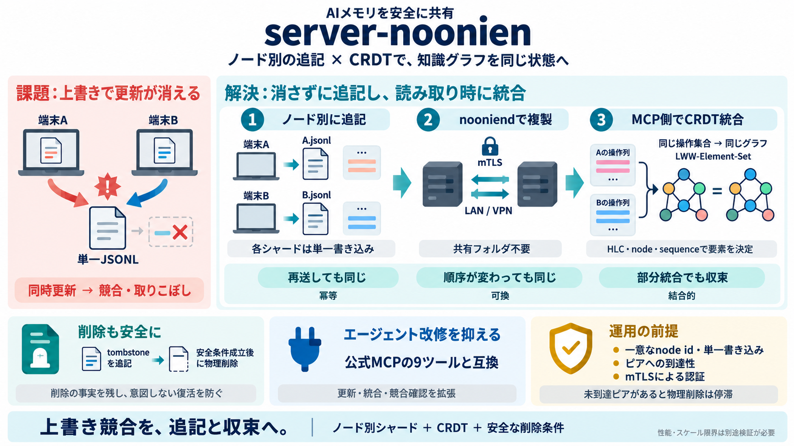

NVD-CVE-2026-29087
Vector: CVSS:3.1/AV:N/AC:L/PR:N/UI:N/S:U/C:H/I:N/A:N ### References to Advisories, Solutions, and Tools [...] ### Weakn…

AIメモリを安全に共有
複数マシンでAIエージェントの知識グラフメモリを共有しても、衝突（上書き）やデータ消失を起こしにくい仕組みを、CRDTと追記型シャードで実現します。
“最後が勝つ”事故
公式の @modelcontextprotocol/server-memory は更新を 単一JSONL に読み直して書き戻す設計になりがちです。複数端末が同時更新すると、片方の更新が黙って消える（競合/取りこぼし）のリスクがあります。
前提（最低限）: entity/observation/relation をグラフとして保持し、複数ノードで同期すると“最後の書き込みが勝つ”問題が起こり得る
上書きではなく追記
server-noonienは知識グラフを、ノードごとの <node>.jsonl という追記型シャードに分解します。他ノードは自分のコピーに取り込み、消さずに統合します。
CRDTで折りたたむ
知識グラフ全体をCRDT（ LWW-Element-Set ）として扱い、HLC（Hybrid Logical Clock）・node・sequence で要素ごとの決定を行います。同じ操作集合なら、統合の順序に依存せず同じ結果に収束します。
削除は論理から
削除は即時の物理削除ではなく、 tombstone（削除操作） を追記して表現します。これにより競合のある状況でも、復活や取り戻し事故を防ぎます。
tombstone は「消した」の事実を残す（論理的に無効化）
物理削除は、収集（collection）のゲート条件が満たされるときだけ実行
読むときに折りたたむ
マージ（折りたたみ）は主にMCPサーバの読み取り時にシャードを畳み込むことで行います。nooniendはシャードの複製と同期（anti-entropy）を担当し、計算負担を読み取り側に寄せます。
MCPツール互換
server-noonienはMCPメモリサーバの公式ツール（9つ）との互換性を保ちつつ、必要な拡張（更新系、merge_entities、read_conflicts など）も追加します。エージェント側の変更を最小化する方針です。
共有フォルダ不要
共有ディレクトリが不要なのは、推奨の nooniend（ピアツーピア複製デーモン） によって、VPN/LAN上の到達性だけでシャードを直接複製するためです。ファイル/S3バックエンドも選べますが、導入はP2Pが中心です。
統合順序が無害
衝突解決を「最後に書いた側」ではなく、HLC・node・sequence とCRDTの性質に委ねることで、ネットワーク遅延や受信順が変わっても同じ操作集合なら同一グラフへ収束します。
ポイント: 冪等・可換・結合的 → “順序不定・再送・重複”に強い設計根拠
公式と何が違う
最大の差は、単一JSONLへの全更新書き戻しをやめて、ノード別追記シャードへ分解する点です。結果として、同時更新があっても“取り込みで統合”され、分岐ファイルのような問題を避けます。
“消す”と“消すまで”
物理削除（GC）は、誰がその要素をまだ確実に知っているかの条件が満たされたときだけ進みます。到達不能ピアや未検証ピアがあると、削除が進みにくくなり、保管が残る可能性があります。
前提が崩れると複雑化
NOONIENDの NOONIEND_NODE_ID が一意で、同じnode idに対して同時に複数サーバが書かないという運用前提が重要です。mTLS運用や到達可能性（ピア参加状況）も誤ると、安全性や動作が揺れます。
mTLSで認証
デーモン間は mTLS による認証を前提とし、証明書のCNがnode idになる設計で制御します。さらに、シャード受け入れは「そのノードが書いたシャードのみ」という制約で勝手な上書きを防ぎます。
注意: mTLSを緩めると攻撃面が広がるため、本文中でも NOONIEND_TLS_REQUIRE_CLIENT=false のような設定には警告があります
結論
server-noonienは「ノード別追記シャード + CRDT折りたたみ + tombstone/collection安全条件」により、分散環境でのAIメモリ共有を、データ消失しにくい形に再設計します。共有領域なしのP2P同期（nooniend）も含め、drop-in互換を目指します。
Vector: CVSS:3.1/AV:N/AC:L/PR:N/UI:N/S:U/C:H/I:N/A:N ### References to Advisories, Solutions, and Tools [...] ### Weakn…
### Benchmarking A new, enhanced harness CLI lets you benchmark the TLSNotary protocol under configurable network condi…
会社概要 弊社について 利用規約 プライバシーポリシー クッキーの設定 クッキーポリシー コミュニティルール 免責事項 方法論 セキュリティ 採用情報採用中です！! サポート …
you have access to an account on a web platform a website showed specific content on a certain date you have private i…
市況概要Spot MarketDerivatives MarketNo. of CryptocurrenciesBitcoin TreasuriesBNB Treasuries. # Portal To Bitcoin（PTB）とは. 26…